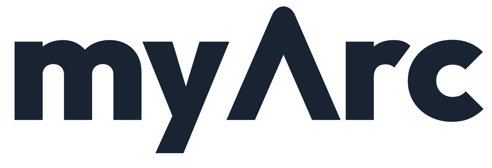

Why myArc is now GPL-3.0
myArc moved from the MIT license to GPL-3.0 so it stays open for good. I don't plan to make money from it, and any modified version has to publish its code.

October 2026
myArc moved from the MIT license to GPL-3.0 so it stays open for good. I don't plan to make money from it, and any modified version has to publish its code.
Why I'm building myArc after Arc's sunset announcement, with account-free browsing, no behavioral tracking and an Artcraft-inspired workflow.